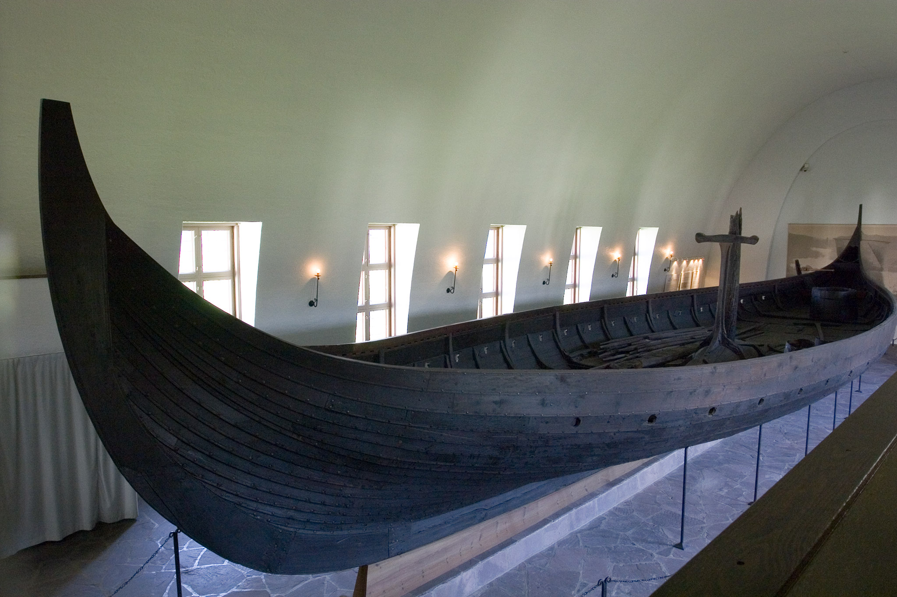
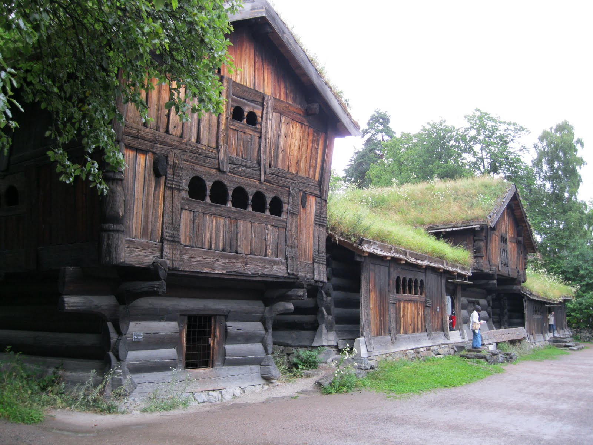
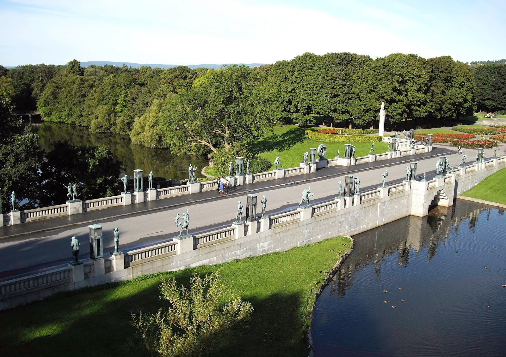
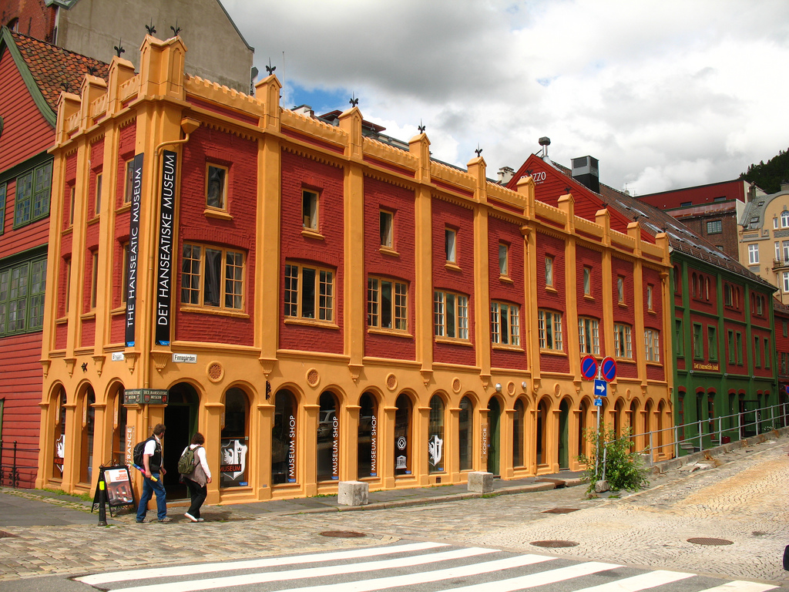

The Best Museums
Three stunning burial vessels from the Viking era were excavated on the shores of the Oslofjord and are now displayed in Bygdøy, Oslo's "museum island." The most spectacular is the Oseberg, from the 9th century, a 20m (66-ft.) dragon ship with a wealth of ornaments.

Here you'll find the most significant collection of the work of Edvard Munch (1863-1944), Scandinavia's most noted artist. The museum, his gift to the city, contains a staggering treasure trove: 1,100 paintings, 4,500 drawings, and about 18,000 prints.

Some 140 original buildings from all over Norway were shipped here and reassembled on 14 hectares (35 acres) at Bygdøy. Although Scandinavia is known for such open-air museums, this one is the best. The buildings range from a rare stave church, constructed around 1200, to one of the oldest wooden buildings still standing in Norway. Old-time Norwegian life is captured here like nowhere else.

This stunning park in western Oslo displays the lifetime work of Gustav Vigeland, the country's greatest sculptor. In 30-hectare (74-acre) Frogner Park, you can see more than 200 sculptures in granite, bronze, and iron, including Angry Boy, his most celebrated work.
Depicting commercial life on the wharf in the early 18th century, this museum is housed in one of the city's best-preserved wooden buildings. German Hanseatic merchants lived in similar medieval houses near the harbor.
